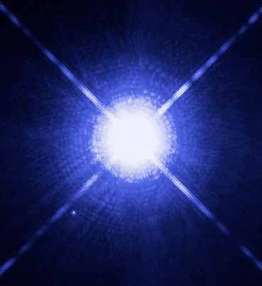
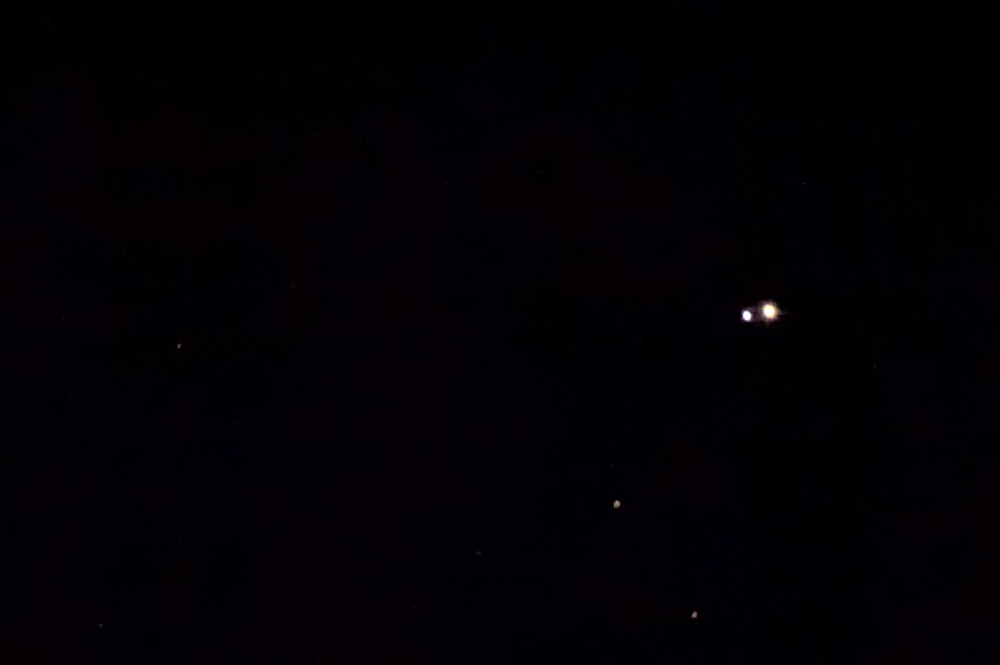

동기 유발
별의 무게는 어떻게 잴까?
교과서 p. 62학습 목표
- 쌍성의 관측 자료로 별의 질량을 구할 수 있다.
- 주계열성의 질량–광도 관계를 이용하여 쌍성이 아닌 별의 질량을 추정할 수 있다.

NASA, ESA, H. Bond (STScI), M. Barstow (Univ. of Leicester)

N. B., CC BY-SA 4.0
별은 저울에 올릴 수도, 직접 가 볼 수도 없다.
그런데 천문학자들은 시리우스 B가 지구만 한 크기에 태양만큼 무겁다는 것을 알아냈다. 어떻게?
그런데 천문학자들은 시리우스 B가 지구만 한 크기에 태양만큼 무겁다는 것을 알아냈다. 어떻게?
1-03에서 위성의 공전으로 행성의 질량을 구한 경험을 떠올리게 합니다(뉴턴의 케플러 제3법칙). '서로 도는 두 별 = 질량을 재는 저울'이 이 차시의 핵심 비유입니다. 운영안 4차시(쌍성 종류 1 / 질량 구하기 1 / 질량–광도 관계 1 / 데이터 탐구 1).
핵심 개념 1
쌍성의 종류
교과서 p. 62 ~ 63관측 방법에 따른 분류
- 쌍성: 두 별이 서로의 중력에 묶여 공통 질량 중심을 공전하는 별. 우리은하 별의 절반 가까이가 쌍성(다중성)이다.
- 안시 쌍성: 망원경으로 두 별이 분리되어 보이는 쌍성. 오랫동안 위치를 측정해 궤도를 그린다.
- 분광 쌍성: 너무 가까워 분리되지 않지만, 스펙트럼의 흡수선이 주기적으로 둘로 갈라졌다 합쳐지는 쌍성(도플러 효과)
- 식쌍성: 궤도면이 시선 방향과 거의 나란하여 두 별이 번갈아 서로를 가리며 밝기가 주기적으로 변하는 쌍성
- 주극소: 표면 온도가 높은(단위 면적당 더 밝은) 별이 가려질 때 → 더 깊다
- 부극소: 표면 온도가 낮은 별이 가려질 때
- 극소 사이 간격 → 공전 주기, 극소 지속 시간 → 별의 크기
시뮬레이션 1쌍성 관측소: 궤도 · 스펙트럼 · 광도 곡선
왼쪽 위: 관측자가 본 모습(크기 과장 없음). 오른쪽 위: 두 별의 시선 속도. 왼쪽 아래: 흡수선(두 별의 선이 갈라짐). 오른쪽 아래: 밝기 변화(주극소·부극소). 궤도 경사를 줄이면 무엇이 먼저 사라질까?
핵심 개념 2
쌍성으로 별의 질량 구하기
교과서 p. 64케플러 제3법칙 + 질량 중심
- 두 별의 질량의 합: 케플러 제3법칙에서 구한다. a는 두 별 사이 거리(궤도 긴반지름의 합)
- 안시 쌍성은 궤도의 각 크기(α″)를 거리로 바꿔야 한다 → 연주시차가 필요하다.
- 두 별의 질량비: 질량 중심까지의 거리에 반비례한다. 분광 쌍성에서는 시선 속도 크기에 반비례한다.
m1 + m2 = a³P² (태양 질량, AU, 년) a (AU) = α (″)p (″) m1m2 = a2a1 = v2v1
예제 · 시리우스
공전 주기 50.1년, 궤도 각 긴반지름 7.50″, 연주시차 0.379″
a = 7.50 / 0.379 ≈ 19.8 AU → mA + mB = 19.8³ / 50.1² ≈ 3.1 M☉
질량 중심까지 거리 비 aA : aB ≈ 1 : 2 → mA ≈ 2.1 M☉, mB ≈ 1.0 M☉
시리우스 B는 지구만 한 크기에 태양 질량을 가진 백색 왜성이다!
핵심 개념 3
주계열성의 질량–광도 관계
교과서 p. 65 ~ 66무거운 별은 훨씬 더 밝다
- 쌍성으로 질량을 구한 주계열성들의 광도를 비교하면, 광도는 질량의 약 3.5 ~ 4제곱에 비례한다.
- 이 관계를 쓰면 쌍성이 아닌 주계열성도 광도만 재서 질량을 추정할 수 있다.
- 백색 왜성·거성처럼 주계열성이 아닌 별에는 적용할 수 없다.
- 수명: 연료(질량)를 쓰는 빠르기(광도)에 반비례 → 질량이 큰 별일수록 수명이 짧다.
L ∝ M3.5 ~ 4 ⟹ 수명 t ∝ ML ∝ M−2.5
데이터 탐구
실제 쌍성 자료로 질량–광도 관계식 만들기
탐구 개요
6쌍의 안시 쌍성은 궤도 자료(P, α, 연주시차)로 질량을 직접 계산하고, 4쌍의 식쌍성은 이미 정밀하게 구해진 질량을 더해 20개 별의 질량–광도 그래프를 만든다. 회귀 분석으로 지수를 구하고, 백색 왜성 같은 이상값이 결과를 어떻게 망가뜨리는지 확인한다.
질량 계산안시 쌍성 6쌍의 a = α/p, MA + MB = a³/P²를 계산하고 질량비로 나눈다(버튼 클릭).
그래프와 회귀log M–log L 산점도에 회귀선을 그리고 기울기(지수)와 r²를 읽는다.
이상값백색 왜성 2개를 포함하면 기울기와 r²가 어떻게 변하는가? 넣어도 되는 자료인가?
활용얻은 관계식으로 베가(L = 40 L☉)의 질량과 수명을 추정한다.
데이터 랩질량–광도 그래프와 회귀 분석
양쪽 축 모두 로그 눈금(태양 = 1). 별 위에 마우스를 올리면 이름과 값이 보인다.
📋 안시 쌍성 궤도 자료
분석 질문
1. 주계열성만으로 구한 질량–광도 관계의 지수와 r²는? 교과서의 3.5 ~ 4와 비교해 보자.
기울기(지수) ≈ 3.8, r² ≈ 0.98. 교과서 값 범위 안에 있다. 질량이 0.2배에서 11배까지 약 50배 다른 별들이 한 직선 위에 놓여, 광도가 약 400만 배 차이 남을 설명한다.
2. 백색 왜성을 포함하면 회귀 결과가 어떻게 변하는가? 이 자료를 넣는 것이 옳은가?
시리우스 B와 프로키온 B는 질량은 0.6 ~ 1 M☉인데 광도는 매우 작아(약 0.0005 ~ 0.06 L☉) 회귀선 아래로 크게 벗어난다. 포함하면 기울기가 달라지고 r²가 약 0.98에서 0.89로 크게 떨어진다. 질량–광도 관계는 수소 핵융합을 하는 '주계열성'의 관계이므로, 핵융합이 끝난 백색 왜성은 모집단이 다른 자료이다. 이상값은 무조건 지우는 것이 아니라 '왜 벗어났는지' 물리적 이유가 있을 때 제외한다.
3. 베가(L ≈ 40 L☉, 주계열성)의 질량과 수명을 추정해 보자.
회귀식으로 M ≈ 401/3.9 ≈ 2.6 M☉(실제 약 2.1 M☉ — 베가는 빠르게 자전해 광도 추정이 복잡하다). 수명 ≈ 100억 년 × 2.6/40 ≈ 6.5억 년. 태양보다 훨씬 짧다.
형성 평가
개념 확인 문제
그림·자료 출처
사진: NASA/ESA/STScI, Wikimedia Commons. 안시 쌍성 궤도 자료는 USNO Sixth Catalog of Orbits of Visual Binary Stars 등의 값을, 식쌍성 질량·광도는 DEBCat(Southworth) 등 문헌 값을 반올림한 교육용 근사값입니다. 시뮬레이션은 직접 만들었습니다.